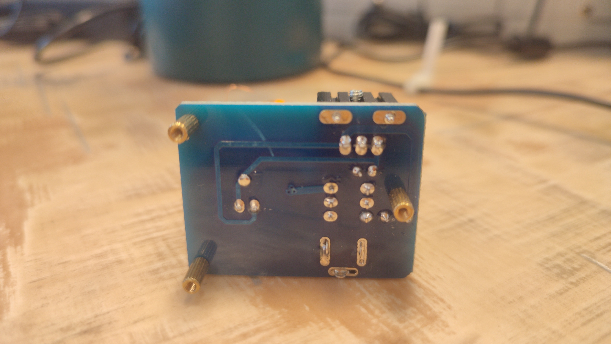

Nikola Tesla 1891-ben építette meg a róla elnevezett Tesla-tekercset. A
Tesla-tekercs legalább két légmagos tekercsből áll, ami nagyfeszültséget
állít elő nagyfrekvencián. A nagyfeszültség 10 000 V-tól akár 10 000 000
V-ig terjedhet, a frekvencia pedig több MHz is lehet, általában 25 kHz és
2 MHz között mozog. A Tesla-tekercs abban különbözik a transzformátortól,
hogy a primer és szekunder áramköre is rezonanciában van az üzemi
frekvenciával, a bevezetett feszültség frekvenciáját megváltoztatja,
valamint abban, hogy légmagos kialakítású. A tekercsek tápellátását
célszerűen transzformátor biztosíthatja. Tesla volt az első, aki az
elektromos rezonancia jelenségét a gyakorlatban is megvalósította és
felhasználta.
Mini Tesla transzformátor KIT, BD243C tranzisztorral.


Adatok:
Működési feszültség: 9...12V DC
Maximális áramfelvétel: 660mA
Elkészítési idő: 15 perc
Méretek: 40 x 31 x 49mm
Észrevételek:
A tekercs összerakása egyszerű volt, a réz végét megcinezni és
helyére forrasztani kicsit trükkös volt, de megbirkóztam vele.
Ha a kis lámpát a tekercs közelébe tesszük, az felvillan.
A magas frekvenciájú áram miatt a tesla tekercs nem rázott, hanem
inkább égetett.
Kapcsolás:

Alkatrészek: